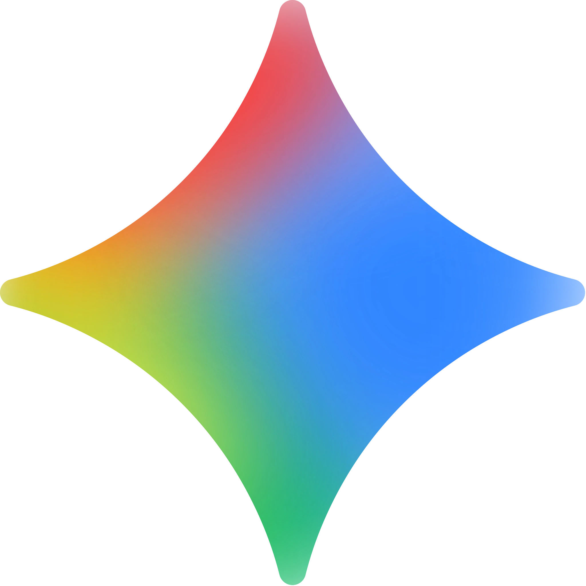

Desarrollado por OpenAI, este modelo de lenguaje extenso de propósito general se centra en la comprensión
y generación de lenguaje natural.
Demuestra un rendimiento estable en la redacción de textos extensos, la descomposición de problemas
complejos, las explicaciones instructivas y la consistencia de diálogos multi-turno, lo que lo hace
ideal para la asistencia al aprendizaje, la creación de contenido, el soporte de programación y el
análisis interdisciplinario.
DeepSeek
Desarrollado por el equipo de DeepSeek, este modelo de razonamiento de alto rendimiento ofrece ventajas
significativas en matemáticas, algoritmos, ingeniería y derivación de código.
Su estilo de respuesta se inclina hacia la concisión y el rigor lógico, lo que lo hace adecuado para el
análisis técnico, problemas de competición, programación y tareas de razonamiento de alta precisión.
Gemini

Un sistema de modelo extenso multimodal lanzado por Google que integra profundamente la búsqueda con
información del mundo real.
Se destaca en la recuperación de información, la integración de datos, la comprensión de imágenes y las
tareas integradas con el ecosistema de Google (como Documentos y Búsqueda), lo que lo hace ideal para la
investigación, la elaboración de informes y el trabajo basado en datos.